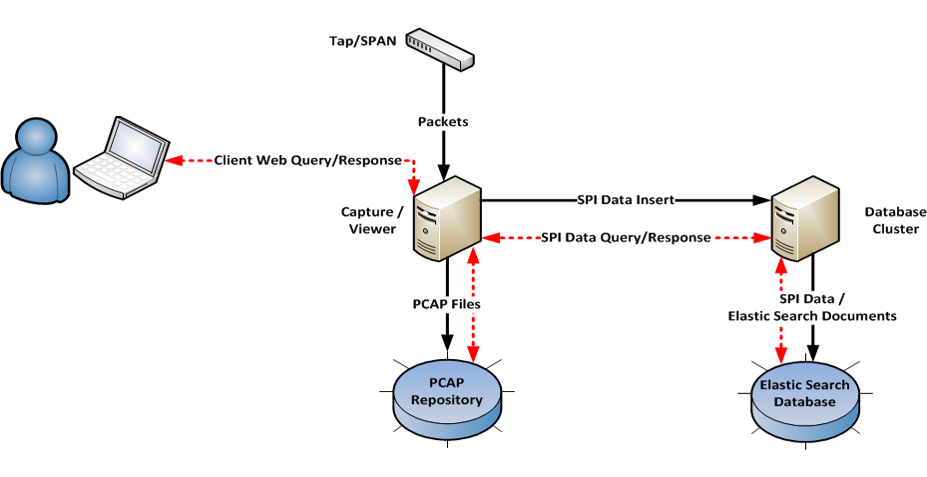
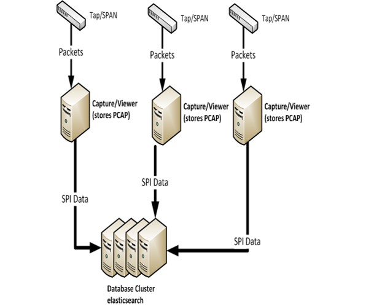

Moloch za analizu mrežnog prometa
Članovi tima:
- Perić Dario
--Dario.peric 15:37, 11. studenog 2015. (CET)
Sadržaj |
Općenito
„Moloch is an open source, large scale IPv4 packet capturing (PCAP), indexing and database system.“ – molo.ch official website
Moloch je alat za praćenje i filtririranje mrežnog prometa. Moloch je open source aplikacija što znači da je besplatna i svatko je može koristiti bez ikakvih naknada. Source code se nalazi na AOL github stranici te je dostupan svima. Sadrži jednostavno web sučelje za PCAP pregledavanje, pretraživanje i izvoženje.
Moloch se koristi za real-time nadgledanje mrežnog prometa za forenzičke svrhe i istraživanje. Svoju najveću svrhu ostvaruje ako se koristi u istovremenski s drugim alatima kao što su anti virus ili IDS. Na taj način je moguće na vrijeme otkriti sumnjive sadržaje u mrežnom prometu te ih pravovremeno zaustaviti. Iako je moloch real-time alat, moguće je pregledavanje i prošlih podataka o mrežnom prometu.
Moloch se sastoji od 3 dijela:
- capture - C aplikacija koja "njuši" mrežno sučelje, analizira mrežni promet te kreira SPI-Data (Session Profile Information) te zapisuje pakete na disk.
- viewer - web sučelje koje omogućava udaljeni pristup podatcima te pretraživanje SPI-data datoteka.
- database - služi za pretraživanje generiranih SPI-data datoteka. Koristi elasticsearch.
Developing
Andy Wick
- backend developer i arhitekt AIM-a
Eoin Miller
- IDS/PCAP Centric Security Nerd
Arhitektura
Moloch se sastoji od tri komponente capture, database i viewer. Arhitektura sustava moloch je takva da se sve tri komponente mogu nalaziti na istom stroju te raditi u isto vrijeme. Ono što je najbitnije je to da moloch zahtijeva vrlo jaku sistemsku konfiguraciju. Capture će tražiti mnogo pohranidbenog prostora za spremanje PCAP paketa. Database će tražiti veliku količinu RAM memorije za indeksiranje i brzo pregledavanje prometa, a viewer je dovoljno malen da se može smjestiti bilo gdje.
 Slika 1. Ukupni protok podataka
{kind=link}
Capture može raditi na jednom ili više domaćina i izvještavati bazu odnosno database komponentu. Database komponenta također može raditi na više domaćina odjednom kako bi se povećala količina iskoristive RAM memorije potrebne za indeksiranje.
 Slika 2. Protok podataka s više domaćina
{kind=link}
Sistemski zahtjevi
Moloch je sistemski vrlo zahtjevan te mu je potrebno računalo velike snage. U nastavku se mogu vidjeti sistemski zahtjevi za korištenje moloch-a.
Moloch capture/viewer sustavi:
- jedno mrežno sučelje i procesor za operacijski sustav - za svako mrežno sučelje koje se želi nadgledati potrebno je oko 10 GB memorije te još jedan procesor - prostor na hard disku od najmanje 10 TB za spremanje PCAP datoteka
Moloch elasticsearch sistem:
- svaki elasticsearch čvor bi trebao imati oko 30-40GB memorije
Instalacija "Database" komponente
1. Priprema elasticsearch stroja na način da se poveća maksimalana broj datotečnik deskriptora i micanjem blokade memorije. To će se učiniti tako da se na dno "/etc/security/limits.conf" dodaju sljedeće linije:
- nofile 128000 - memlock unlimited
2. Ako se radi o namjenskom stroju, isključiti swap na način da se zakomentiraju linij u /etc/fstab ili naredbom swapoff.
3. Preuzeti elasticsearch na sljedećem linku: [1]
4. Raspakirati preuzete datoteke
5. Instalirati bigdesk i elasticsearch-head prije dijeljenja na sve strojeve.
6. Kreirati novu datoteku elasticsearch.yml te podijeliti je na sve strojeve. Sadržaj datoteke je sljedeći:
- set cluster.name to something unique
- set node.name to ${ES_HOSTNAME}
- set node.max_local_storage_nodes to number of nodes per machine
- set index.fielddata.cache: node
- set indices.fielddata.cache.size: 40%
- set path.data and path.logs
- set gateway.type: local
- set gateway.recover_after_nodes should match the number of nodes you will run
- set gateway.expected_nodes to the number of nodes you will run
- disable zen.ping.multicast
- enable zen.ping.unicast and set the list of hosts
7. Kreirati elasticsearch skriptu za pokretanje s sljedećim sadržajem:
- najprije pozvati ulimit -a - set ES_HEAP_SIZE=20G (or whatever number you are using, less then 32G) - set JAVA_OPTS="-XX:+UseCompressedOops" if using real Java - set ES_HOSTNAME to `hostname -s`
8. Pokrenuti grupu pri čemu pričekati odprilike 5 sekundi izmedju svakog čvora.
9. Koristiti elasticsearch za pregledavanje grupe te provjeriti da li je sve zeleno.
10. Unutar instaliranog $MOLOCH_PREFIX/db direktorija pokrenuti db.pl A_ES_HOSTNAME init skriptu.
11. Ponovo provjeriti elasticsearch-head te uočiti da li je i dalje sve zeleno. Sada bi trebali biti vidljivi neki od indeksa.
Instalacija "Capture" komponente
1. Najprije je potrebno instalirati standardne pakete ovisno o operacijskom sustavu.
- CentOS - yum install wget curl pcre pcre-devel pkgconfig flex bison gcc-c++ zlib-devel e2fsprogs-devel openssl-devel file-devel make gettext libuuid-devel perl-JSON bzip2-libs bzip2-devel perl-libwww-perl libpng-devel xz libffi-devel
- Ubuntu - apt-get install wget curl libpcre3-dev uuid-dev libmagic-dev pkg-config g++ flex bison zlib1g-dev libffi-dev gettext libgeoip-dev make libjson-perl libbz2-dev libwww-perl libpng-dev xz-utils libffi-dev
- OS X - port install yara libpcap libnids openssl pcre flex bison zlib file gettext p5-JSON p5-libwww-perl libffi xz ossp-uuid libgeoip glib2./configure --with-libpcap=/opt/local --with-libnids=/opt/local --with-yara=/opt/local --with-GeoIP=/opt/local LDFLAGS=-L/opt/local/lib --with-glib2=no GLIB2_CFLAGS="-I/opt/local/include/glib-2.0 -I/opt/local/lib/glib-2.0/include" GLIB2_LIBS="-L/opt/local/lib -lglib-2.0 -lgmodule-2.0 -lgobject-2.0 -lgio-2.0"
2. Pokrenuti ./easybutton-build.sh što će preuzeti sve sljedeće datoteke te ih je zatim potrebno statički kompajlirati te pokrenuti lokalnu konfiguracijsku skriptu ili datoteke manualno preuzeti. Potrebne su sljedeći paketi:
- glib-2 inačica 2.30 ili novije:
- wget http://ftp.gnome.org/pub/gnome/sources/glib/2.46/glib-2.46.2.tar.xz./configure --disable-xattr --disable-shared --enable-static --disable-libelf --disable-selinux
- yara inačica 1.6 ili novije:
- wget http://yara-project.googlecode.com/files/yara-1.7.tar.gz./configure --enable-static
- MaxMind GeoIP:
- wget http://www.maxmind.com/download/geoip/api/c/GeoIP-1.6.0.tar.gz./configure --enable-static
- libpcap - inačica 1.3 ili novije:
- wget http://www.tcpdump.org/release/libpcap-1.7.2.tar.gz./configure --disable-dbus
- libnids - inačica 1.24 ili novije:
- wget http://downloads.sourceforge.net/project/libnids/libnids/1.24/libnids-1.24.tar.gz./configure --disable-libnet --disable-glib2
3. Pokrenuti configure.
4. Pokrenuti make.
Instalacija "Viewer" komponente
1. Potreban je Python inačica 2.6 ili novije.
2. Instalirati Node.js inačica 0.10.x
3. U viewer direktoriju pokrenuti npm update.
Konfiguracija
1. Potrebno je preuzeti najnoviju inačicu GeoIP i RIR datoteka.
- GeoLiteCountry [geolite.maxmind.com/download/geoip/database/GeoLiteCountry/GeoIP.dat.gz] - GeoIPASNum - ipv4-address-space
2. Izmijeniti config.ini datoteku.
3. U viewer direktoriju je potrebno pokrenuti addUser.js da bi se dodao korisnik na sljedeći način:
- node addUser.js <userid> "<Friendly Name>" <password>
4. Izmijeniti db/daily.sh skriptu, na način da pod crontab postavimo na jedan stroj.
Pokretanje
Nakon što su obavljene sve dosadašnje pripreme potrebno je pokrenuti Moloch. Na svakom stroju za praćenje potrebno je pokrenuti barem jedan moloch-capture i jedan moloch-viewer. Unutar /etc/inittab dodajemo sljedeće:
- m1:2345:respawn:/home/moloch/capture/run.sh - v1:2345:respawn:/home/moloch/viewer/run.sh
Reference
[1] http://blog.alejandronolla.com/2013/04/06/moloch-capturing-and-indexing-network-traffic-in-realtime/
[2] https://github.com/aol/moloch/wiki/Presentations
[3] https://github.com/aol/moloch#what-is-moloch
[4] http://molo.ch/